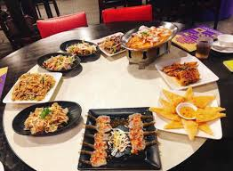

泰國菜的食材

主食
泰國一般的主食，就是泰國本土出產的茉莉香米。泰國中原土地肥沃，雨水充足，種稻米一年能收三至四次。
米飯為主食，佐菜可以有咖哩、炒菜、或其他菜色。求簡快的時候，佐菜可以放在飯前面。除了茉莉香米之外，
泰國還有吃糯米的習慣。糯米是泰國東北部和寮國的日常主食。
泰國的麵條，用閩南通用的名，叫粿條（泰文：ก๋วยเตี๋ยว），
上菜時通常單單一碟，例如泰式炒河粉（音：Pad Thai；泰文：ผัดไทย），
或各種湯麵。由於華裔定居泰國多年，不少中國的菜色已經被泰國化，
例如泰國船麵（泰文：ก๋วยเตี๋ยวเรือ；音：kway teow rua）。
常用材料
香料
南薑、酸子、香茅、青蔥﹑檸檬葉﹑九層塔、胡荽、紫蘇、薄荷葉等。
調味料
辣椒、咖哩、魚露、蝦醬、椰奶等。
首頁
第2頁
第4頁
第5頁